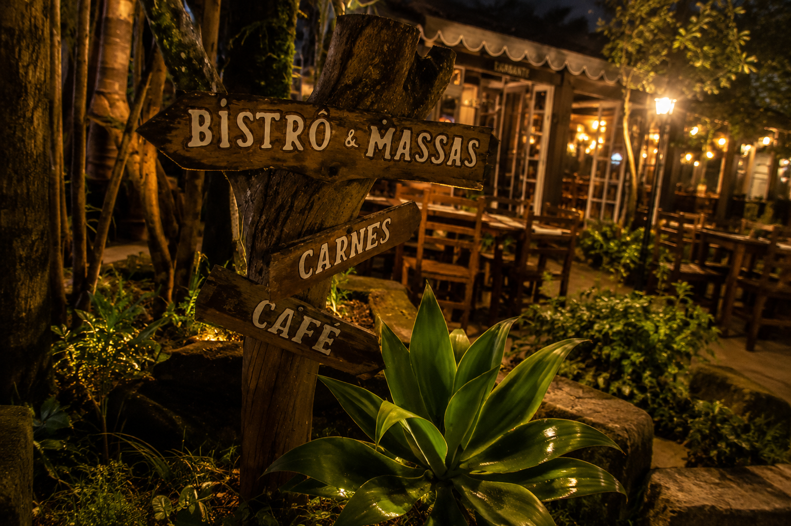

O FUTURO
A Era das Novidades Barbante

Trattoria Barbante
Massas, pizzas, risotos e harmonizações com cervejas artesanais e vinhos mineiros.

Maria Fumaça Café
Um espaço acolhedor inspirado no café colonial mineiro, cercado pela natureza e boa música.

Sítio Gastronômico Barbante
Cultura, gastronomia, cerveja, arte e entretenimento reunidos em um único lugar.